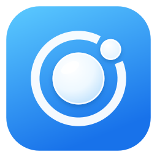
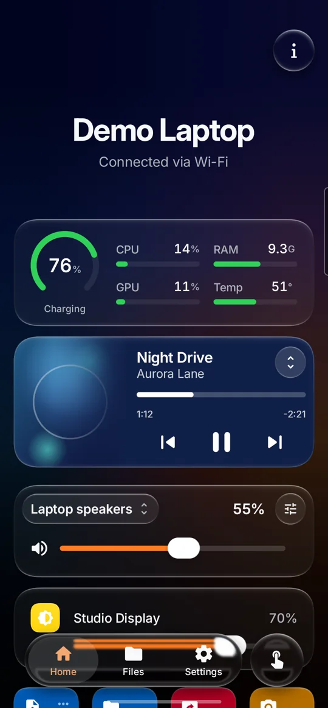
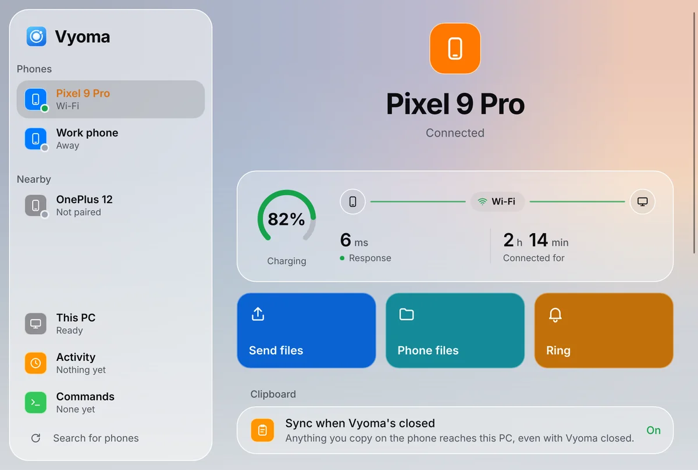
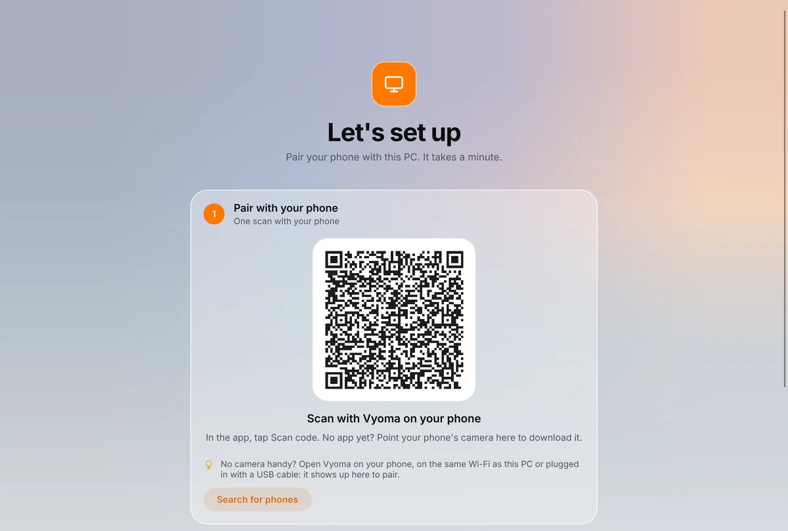

Photos and files, both ways
Send them across in a tap, whole folders too. A big one picks up where it stopped.

Vyoma DownloadCopy on one, paste on the other. Send photos in a tap. Take calls and texts at your desk. Like Apple's Continuity, for Android and Linux.
Vyoma links your Android phone to your Linux computer over your own Wi-Fi. Here's what that gets you.
Send them across in a tap, whole folders too. A big one picks up where it stopped.
Copy a link on your phone, paste it on your PC. And the other way round.
Phone ringing in the other room? Answer on the PC and talk through its speakers and mic.
Read your texts and reply on the PC, from your own number.
See it and use it from the couch, or grab a screenshot.
Your phone as a touchpad and keyboard. Or point it at the screen to move the pointer.
Next slide with a tap or the volume keys, and a laser pointer you aim by hand.
Your phone's camera and mic, in any video call on the PC.
Xbox or PlayStation layout, with analog triggers and motion aiming.
Your PC can lock itself when you leave with your phone. Run your own shortcuts with a tap.
Its battery, what it's playing, volume and brightness, from your phone.
On Wi-Fi, a USB cable or Bluetooth. Whatever works, it uses.
Your phone becomes a remote for your PC. Your PC gets a window into your phone.

See your PC's battery, the song it's playing, its volume and brightness. One tap sends files, shows its screen or locks it.

Its calls, texts and notifications pop up on your PC. Right-click any file to send it to your phone, and open your phone's files right in your file manager.
Scan one code and your phone and PC know each other for good. They reconnect by themselves, and nothing goes through anyone else's server.
Point your phone at the code on your PC's screen. That's the whole setup: no passwords, no codes to type. From then on they connect on their own.
No rooting, no developer settings, no extra apps. Install it on both, scan, and it works.
Someone picks up your unlocked phone? They still can't get into your PC: unlocking it, its files and its screen ask for your fingerprint. Your texts on the PC do too.
They talk to each other directly and encrypted, on your own network. No cloud in between, nothing to sign up for.
Glassy, colourful and smooth, in your wallpaper's colours. Every tap answers with a little motion.
No account, no ads, no tracking. Open source, so anyone can check what it does.
If the phone and the PC ever can't reach each other, Vyoma doesn't just spin. It checks, then says what's in the way in plain words, with the button that fixes it.
Set up the PC first, then the phone, then scan.
Paste this into a terminal. In about a minute it downloads Vyoma, checks it's genuine and adds it to your app menu. Already use KDE Connect? Vyoma takes over and keeps your paired phones.
$ curl -fsSL https://github.com/Prajwaljb/VyomaConnect/releases/latest/download/install.sh | sh
For KDE Plasma and GNOME, on Arch, Debian, Ubuntu, Fedora and more. Updates take one click. On Arch, you can build the package instead. Changed your mind? Run it with sh -s -- --undo to put KDE Connect back.
Get the app and open it. Android 12 or newer. To get every update by itself, add this repository to Obtainium.
SHA-256 7F:EB:FF:09:7C:EF:AA:F1:2C:CF:3A:C6:ED:2E:C8:EA:A0:C0:9A:7A:0A:77:83:8B:B8:2E:E5:3E:00:04:84:B1
Open Vyoma on both. Your PC shows a QR code: tap Scan code on the phone and point it at the screen. Done, with nothing to type or confirm.

Something else? Ask on GitHub.
Two apps, one for your Android phone and one for your Linux PC, that make them work together: copy and paste between them, send files, answer calls and texts on the PC, use the phone as a remote, webcam or game controller. Think Apple's Continuity or Microsoft's Phone Link, for Android and Linux.
Yes. It's free and open source under the GNU GPL, with no account, no ads and no tracking.
Yes. The phone app pairs with either and covers the essentials: files, clipboard, notifications, media, commands, touchpad and presenter. Vyoma's own PC app unlocks the rest, and takes over from KDE Connect with your pairings intact. One command puts KDE Connect back.
No. Everything works over Wi-Fi without them. Only reading the clipboard while Vyoma is closed needs a one-time grant from your PC over a USB cable, after which USB debugging can go off again. Controlling the phone from the PC uses Android's accessibility service, asked for only when you first use it.
Yes, with Vyoma's PC app. Calls pop up with Answer and Decline. To talk through the PC's speakers and microphone it needs Bluetooth, which carries only the call's sound. Opening Messages asks for your fingerprint on the phone, and it locks again with the PC. Texts are sent through your phone and never saved on the PC.
Android 12 or newer, and Linux with KDE Plasma or GNOME on x86_64 or ARM64. Other desktops and macOS are on the way.
No. Phone and PC talk directly and encrypted, on your network or over a cable. The only thing that goes online is the PC app's daily check for a new version on GitHub, which you can turn off.
The phone says why in plain words, with the button that fixes it. A USB cable always works, and you can connect by IP address too, for Tailscale and other VPNs.